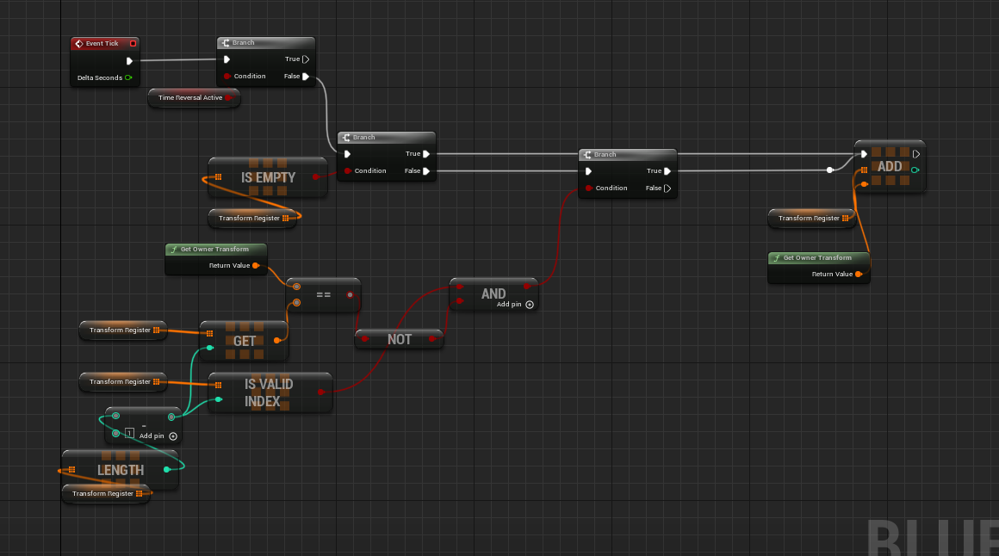
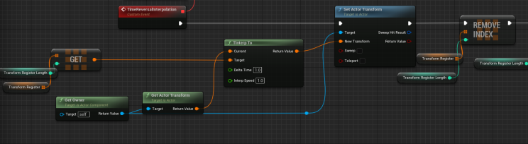
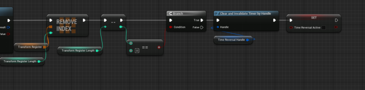
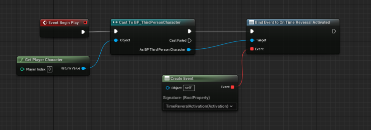
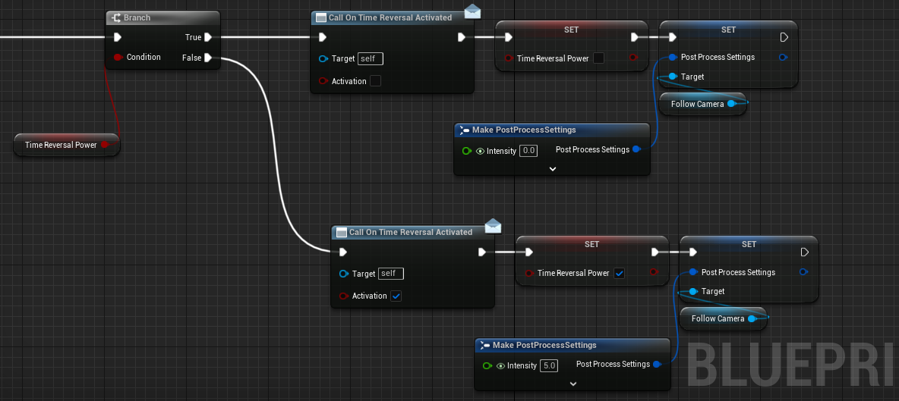

A time-reversal mechanic looks simple from the outside: make an object travel back through its previous states. The implementation becomes interesting when you decide what to record, how often to record it, how to replay it smoothly, and how much history the system can afford to retain.
Component-based architecture
The prototype places the logic inside an Actor Component. Adding the component to an actor enables that actor to maintain its own transform history without duplicating rewind logic across multiple classes.
Recording meaningful state

On Tick, the component compares the owner’s current transform with the last recorded state. It stores a new entry only when location, rotation, or scale changes. Stationary actors therefore add no redundant transform samples.
When rewind begins, the system traverses the stored entries in reverse and applies them to the owner. Interpolation between samples makes the result feel smoother and permits a lower recording density.
Managing memory



The original prototype removes history entries after they are consumed. That is useful when rewind is a one-shot action because the data is no longer needed. For a production system with repeatable rewind, a fixed-duration circular buffer is usually easier to budget: history length, sample rate, and actor count become explicit constraints.
Optimization is not simply “store fewer transforms.” The correct sampling policy depends on the fastest motion, acceptable visual error, rewind duration, and number of rewindable actors.
Triggering the effect


Each component can bind to an event dispatcher exposed by the player or a world-level rewind coordinator. A centralized coordinator reduces direct dependencies when many actors participate and makes global start, stop, and direction changes easier to manage.
Production edge cases
- Physics simulation and velocity restoration.
- Destroyed or spawned actors during the recording window.
- Animation, particles, audio, and gameplay state beyond transforms.
- Collision while moving backward through occupied space.
- Multiplayer authority and bandwidth.
- Branching history after the player resumes from an earlier state.
The component is a strong prototype because it isolates the core mechanic. The next engineering step is to define which categories of state must rewind and which should be reconstructed or ignored.